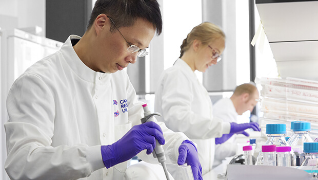

1 in 2 people will get cancer in their lives. Make a change today.
We are the world's largest independent cancer research organisation. We fund and directly support research of all types of cancer. Funding supports something as big as a new research centre down to the small glass slides that are used to analyse cancer cells. We are dedicated to saving lives and beating cancer. Through our pioneering work into the diagnosis, treatment and prevention of cancer, we have helped save millions of lives.
Cancer Research UK relies on the generosity of the public to fund its life-saving research and it needs support more now than ever. We raise funds through donations, gifts in wills, community fundraising and events, corporate partnerships, and our retail chain of over 600 shops.
We have been at the forefront of cancer research since 1902. 120 years of life-saving scientific discoveries. We have helped double cancer survival rates in the UK over the past 50 years. In 1970, only 1 in 4 cancer patients would survive for just an average of 10 years. Today, half of cancer patients will survive cancer.

We want to bring about a world where everybody can lead longer, better lives, free from the fear of cancer. We are aiming to have 3 in 4 cancer patients surviving by 2034. We envision a world where:
- Some types of cancer are effectively eliminated
- Many more are prevented from developing in the first place
- People who do develop cancer are diagnosed at the earliest possible stage so they can be successfully treated
- Treatments are more effective, kinder and more targeted, so people can lead better, more fulfilling lives
- Everyone shares in this progress equally, regardless of who they are, where they’re from or what type of cancer they have
We all have a part to play in supporting the vital research that will save millions of lives and beat cancer.